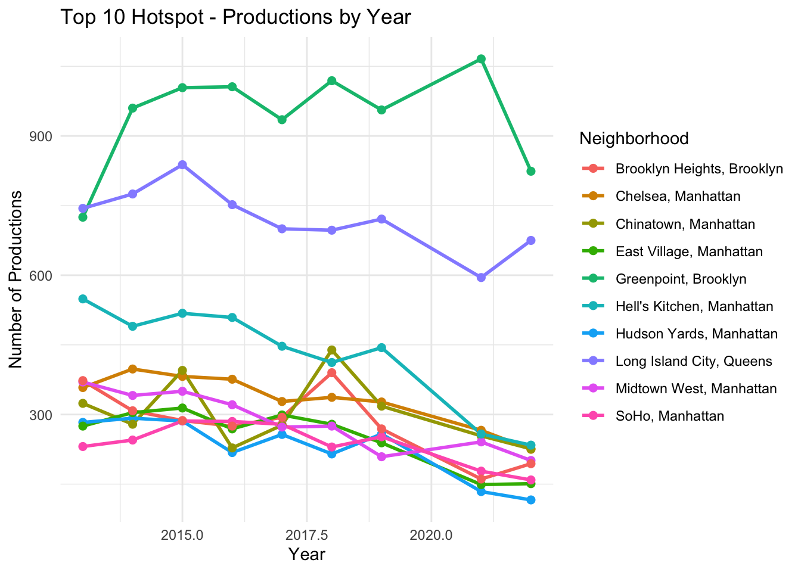

How Film Production Signals Real Estate Change in NYC
Introduction
For decades, dreamers from every corner of the country and the world have relocated to New York City to experience all that the Big Apple has to offer. Most comes to the city with a romanticized idea about life in New York. These ideas are shaped by movies, tv shows, news, and other media.
The team’s collective analysis will determine if there is a connection between NYC’s film production activity and rising real estate prices. Specifically we want to know: Does film production activity act as an early signal — or even a catalyst — for rising real estate values in New York City neighborhoods?
My individual contribution to this overarching question consists of sourcing the historical film permits dataset and making it analysis ready while also providing key insights into neighborhoods trends and shifts by tackling the question below.
What neighborhoods consistently host production activities, and which are rarely filmed? How have these hotspots shifted over-time?
This report walks through the data acquisition and the exploratory stage. Explains the methodology behind the analysis, and presents visual representations of the findings.
Data Acquisition
When searching for data sources on NYC Open Data, it quickly became apparent that the film permits data provided by the Mayor’s Office of Media and Entertainment was well suited to represent NYC film production activity. The data contains 14 columns. I highlighted the more meaningful ones below:
EventID - Auto-generated unique event identification number
EventType – Type of activity for the approved permit.
StartDateTime – When the Activity was scheduled to begin.
Category – Description of Production
ZipCode – Zip code of production activity
The initial dataset covered just February 2023 through August 2025—roughly 14,000 observations, but far short of the 10-year window my team needed to meaningfully analyze real estate trends. This led me down a research rabbit hole that eventually surfaced a New York City Council study on film production complaints. Their public GitHub repository, linked from the official government site (https://council.nyc.gov/data/film-permits/), contained what was needed: two additional datasets with historical film permit records.
Dataset 1 – Covers January 2012 – August 2021 film permits
Dataset 2 – Covers January 2021 – October 2022 film permits
Missing data includes the months of November 2022, December 2022, January. 2023. We don’t find the missing data significant and therefore we choose to ignore.
All three datasets were acquired via static file retrieval from publicly hosted URLs. One dataset was stored in my personal GitHub repository prior to import. This precaution was necessary because a December update to NYC Open Data’s film permits dataset introduced numerous missing fields, compromising data integrity.
A Note About Methodology
Please note that a single film permit in NYC often covers multiple shooting locations across different zip codes. For example, one production might film scenes in Manhattan’s Financial District, move to Brooklyn Heights, and wrap up in Long Island City, all under the same permit. Rather than counting this as a single permit we treat each zip code tied to a permit as a distinct observation. This approach captures the true geographic footprint of production activity and is essential for analyzing city wide trends and any correlation with real estate price appreciation.
Exploratory Data Analysis
How many film permits have been approved each year (2013 - 2023)?
Code
permits_per_year <- clean_permits |>group_by(start_year) |>summarise(Total_Permits =n() ) |>arrange(start_year)datatable( permits_per_year,colnames =c("Year", "Total Permits"),caption ="NYC Film Permits by Year",rownames =FALSE,options =list(pageLength =11,dom ='t')) |>formatRound(columns ="Total_Permits", digits =0, mark =",")
Approved film permits showed steady growth from 2013 through 2019. The upward trajectory came to an abrupt halt in 2020, when the COVID-19 pandemic forced productions to shut down, resulting in a sharp decline in permits issued. The industry rebounded in 2021 and 2022 as productions resumed,though permit counts have not fully returned to pre-pandemic levels. Data for 2023 reflects the impact of the SAG-AFTRA strike, which halted productions for close to 6 months. As a result, permit counts for 2023 are significantly lower.
How many film permits have been approved per borough?
The distribution of film permits across NYC’s five boroughs is uneven. Manhattan leads by a substantial margin, followed by Brooklyn and Queens. The Bronx and Staten Island account for a considerably smaller share, suggesting these boroughs remain underutilized by the film industry.
How is film production activity distributed across zip codes?
The distribution of film production across NYC is highly skewed. A small number of zip codes capture the majority of filming activity, while most neighborhoods see little to none. The top decile of zip codes represents just 10% of all filmed locations, accounts for a disproportionately large share of total permits issued. Meanwhile, the bottom deciles contribute minimally, with many zip codes hosting only a handful of productions over the entire period. This concentration suggests that certain neighborhoods possess qualities,recognizable streetscapes, production friendly infrastructure, or logistical advantages that make them attractive to the industry.
If Zip Codes Retained + New Entries > 10 it means we have a tie between two zip codes for the number of permits.
The top 10 film production zip codes demonstrate stability. Most years retain 8–9 of the previous year’s top zip codes, indicating that a core group of neighborhoods consistently dominates NYC film production. The highest stability occurred in 2014 with 100% overlap, while 2019 and 2023 saw the most turnover with only 70% overlap. Notably, the COVID-impacted year of 2020 maintained 80% stability, suggesting that even during disruption, established filming locations remained preferred. Overall, while there is some movement year-to-year, NYC’s top filming hotspots are largely entrenched.
Code
plot_data <- clean_permits |>filter(!start_year %in%c(2020, 2023)) |>filter(zipcode %in%c("11222", "11101", "10036", "10011", "10013", "10019", "11201", "10003", "10012", "10001")) |>group_by(start_year, zipcode) |>summarise(Productions =n(), .groups ="drop")zip_to_neighborhood <-c("11222"="Greenpoint, Brooklyn","11101"="Long Island City, Queens","10036"="Hell's Kitchen, Manhattan","10011"="Chelsea, Manhattan","10013"="Chinatown, Manhattan","10019"="Midtown West, Manhattan","11201"="Brooklyn Heights, Brooklyn","10003"="East Village, Manhattan","10012"="SoHo, Manhattan","10001"="Hudson Yards, Manhattan")plot_data <- plot_data |>mutate(Neighborhood = zip_to_neighborhood[as.character(zipcode)])ggplot(plot_data, aes(x = start_year, y = Productions, color = Neighborhood)) +geom_line(size =1) +geom_point(size =2) +labs(title ="Top 10 Hotspot - Productions by Year",x ="Year",y ="Number of Productions",color ="Neighborhood" ) +theme_minimal()

Greenpoint, Brooklyn emerges as the dominant film production hotspot, consistently leading all neighborhoods with over 900 annual productions and a positive average year-over-year growth rate of (+2.7%). Long Island City, Queens holds the second position, though its trajectory shows a slight decline (-0.7%) over the period. Notably, most Manhattan neighborhoods are experiencing declining production activity, Hell’s Kitchen (-8.8%), Hudson Yards (-7.8%), and Midtown West (-6.6%) show the steepest drops, suggesting a shift away from traditional Manhattan filming locations. Chelsea, East Village, SoHo, and Brooklyn Heights follow similar downward trends. The only exception is Chinatown, which shows modest growth (+0.8%). This pattern reveals a broader geographic shift in NYC’s film industry, production is migrating from Manhattan’s historically popular neighborhoods toward Brooklyn, with Greenpoint establishing itself as the city’s premier filming destination.